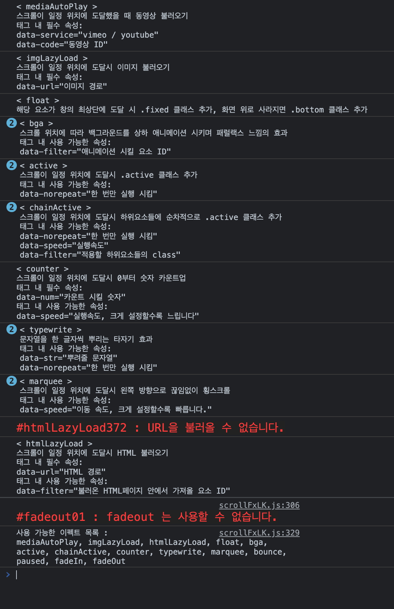

스크롤 위치에 따라 다양한 효과를 발생시킵니다.
scrollFxLK.js 를 HTML 문서의 가능한 한 최상단에서 호출 합니다.
각 이펙트는 window.onLoad 콜백으로 addScrFxItem('엘리먼트ID','이펙트') 함수를 호출하여 사용할 수 있으며,
사용할 수 없는 이펙트를 호출하거나 설정 오류시 다음과 같이 콘솔창에 에러메세지와 함께 짧은 도움말을 출력 합니다.
<script type="text/javascript" src="./scrollFxLK.js"></script>
window.addEventListener('load',()=>{
addScrFxItem('엘리먼트ID','이펙트');
});
태그 안에 지정된 data-service, data-code 값에 따라 youtube 혹은 vimeo 동영상을 불러 옵니다.
영상이 화면 밖으로 사라지면 일시정지 시키며, 화면 안으로 들어오면 다시 재생 시키고, 소리를 제어하는 버튼이 생성 됩니다.
요소의 class 를 .media_auto_play 로 지정하면 함수를 호출하지 않아도 자동적용 됩니다.
youtube 의 경우 PC로컬에서 페이지 실행 시 정상작동 하지 않습니다.
.media_auto_play { width: 800px; height: 450px; }
.media_auto_play .controller { width: 50px; height: 50px; bottom: 50px; right: 50px; }
addScrFxItem('media01','mediaAutoPlay');
↓ 랜덤재생
여러 영상 랜덤재생 기능 사용시, youtube 나 vimeo 양쪽의 서비스 모두에서 랜덤재생을 시키려면 다음의 방법을 사용하세요.
스크롤이 일정 위치에 도달했을 때 태그 안에 지정된 data-url 값에 지정된 경로의 이미지를 불러 옵니다.
한 번만 실행 됩니다.
용량이 큰 gif 이미지를 불러올 때 유용합니다.
addScrFxItem('ill01','imgLazyLoad');
스크롤이 일정 위치에 도달했을 때
태그 안에 지정된 data-url 값에 지정된 경로의 HTML 페이지를 불러 옵니다.
data-filter 값을 지정하면, 불러온 html페이지 안에서 해당 ID값을 가진 요소만 찾아 불러 옵니다.
cafe24 혹은 그 외 다른 솔루션의 경우, 모든 페이지에 기본적으로 html 헤더 정보가 포함 되므로 가급적 filter를 지정하여 사용하세요.
최대 2초동안 로딩을 시도 합니다.
한 번만 실행 됩니다.
요소의 class 를 .html_lazy_load 로 지정하면 함수를 호출하지 않아도 자동적용 됩니다.
PC로컬에서 페이지 실행 시 작동하지 않습니다.
addScrFxItem('hll01','htmlLazyLoad');
불러올 페이지
결과
해당 요소가 브라우저창의 최상단에 도달 시 .fixed 클래스를 추가하며,
화면 위로 사라지면 추가로 .bottom 클래스를 추가합니다.
CSS 내용에 따라 문서 최하단까지 특정 요소를 플로팅 시킬 수도, 일정 영역 안에서만 플로팅 시킬 수도 있습니다.
GNB 등에 사용할 때 유용합니다.
#float01 { height:1000px; position:relative; margin-bottom:300px; }
#float01 > div { width:300px; background-color:#eaeaea; height:300px; position:absolute; z-index:2; top:0; left:0; }
#float01.fixed > div { position:fixed; left:21rem; }
#float01.bottom > div { position:absolute; bottom:-300px; left:0; top:unset; }
#gnb_wrap { height:100px; position:relative; }
#gnb { height:100px; width: 100%; position:relative; top:0; left:0; z-index:99; background-color:#fff; }
#gnb_wrap.fixed > #gnb { position:fixed; }
addScrFxItem('float01','float');
addScrFxItem('gnb_wrap','float');
적용한 요소의 첫번째 자식 요소 혹은 data-filter에 지정된 id값을 가진 요소를
스크롤 위치에 따라 상하 애니메이션 시키며 패럴랙스 느낌의 효과를 냅니다.
부모 요소의 height 값은 애니메이션 되는 자식 요소보다 작게 지정되어 있어야 하며,
설정 오류 시 콘솔창에 경고가 뜨며 실행이 무시 됩니다.
#bga01 { position:relative; height:300px; width:100%; }
#bga01 p { position:absolute; z-index:2; top:48%; left:0; width:100%; text-align:center; }
#bga01 img { height:1000px; width:100%; object-fit:cover; }
#bga02 { height:500px; width:100%; }
addScrFxItem('bga01','bga');
addScrFxItem('bga02','bga');
BGA
스크롤이 일정 위치에 도달했을 때 적용한 요소에 .active 클래스를 추가합니다.
#active01, #active02 { scale:0.8; opacity:0.5; transition:1s; }
#active01.active, #active02.active { scale:1; opacity:1; }
addScrFxItem('active01','active');
addScrFxItem('active02','active');
스크롤이 일정 위치에 도달했을 때 적용한 요소의 자식 요소들에 순차적으로 .active 클래스를 추가합니다.
#chainActive01 > div { scale:0.8; opacity:0.5; transition:0.5s; }
#chainActive01 > div.active { scale:1; opacity:1; }
addScrFxItem('chainActive01','chainActive');
addScrFxItem('chainActive02','chainActive');
적용 요소 안에서 data-num 속성을 가진 하위 요소들을 모두 찾아
스크롤이 일정 위치에 도달했을 때 0부터 data-num 값에 입력된 숫자까지 카운트업 시킵니다.
addScrFxItem('counter01','counter');
스크롤이 일정 위치에 도달했을 때
지정된 data-str 값, 혹은 값이 지정되어 있지 않다면 요소 내의 문자열을 한 글자씩 뿌려 줍니다.
addScrFxItem('typewrite01','typewrite');
addScrFxItem('typewrite02','typewrite');
스크롤이 일정 위치에 도달했을 때 자식요소들을 왼쪽 방향으로 끊임없이 횡스크롤 시킵니다.
#marquee01 { height: 100px; }
addScrFxItem('marquee01','marquee');
addScrFxItem('marquee02','marquee');
스크롤이 일정 위치에 도달했을 때 해당 요소에 통통 튀는 효과를 줍니다.
addScrFxItem('bounce01','bounce');
스크롤이 멈춘 후 1초 후에 해당 요소에 .active 클래스를 추가합니다.
스크롤이 시작되면 active 클래스를 제거 합니다.
#paused01 { opacity: 0; transition: 0.5s; }
#paused01.active { opacity:1; }
addScrFxItem('paused01','paused');
스크롤 위치에 따라 적용 엘리먼트의 투명도를 조절합니다.
스크롤 위치가 아래로 내려갈 수록 불투명해 집니다.
addScrFxItem('fadein01','fadeIn');
스크롤 위치에 따라 적용 엘리먼트의 투명도를 조절합니다.
스크롤 위치가 아래로 내려갈 수록 투명해 집니다.
addScrFxItem('fadeout01','fadeOut');
태그의 class를 아래와 같은 특정값으로 지정 시 addScrFxItem() 함수를 호출하지 않아도 자동으로 적용 됩니다.
.media_auto_play : mediaAutoPlay
.img_lazy_load : imgLazyLoad
.html_lazy_load : htmlLazyLoad
적용되는 클래스 이름들은 초기값이며, 아래와 같은 스크립트를 삽입하면 클래스 이름을 변경할 수 있습니다.
window.addEventListener('load',()=>{
scrFX.autoLoadSelector.mediaAutoPlay = '.myClass';
scrFX.autoLoadSelector.imgLazyLoad = '.myClass';
scrFX.autoLoadSelector.htmlLazyLoad = '.myClass';
});
스크롤 위치에 상관 없이 몇몇 이펙트들을 강제로 불러올 수 있습니다.
forceScrFx('엘리먼트ID','이펙트') 함수로 사용할 수 있습니다.
강제실행 시킨 효과는 스크롤에 반응하지 않고 한 번만 동작 합니다.
아래와 같이 도움말모드를 활성화 하면, 호출한 이펙트에 대한 간략한 설명을 콘솔창에 출력 합니다.
활성화 하지 않아도 오류 발생 시 해당 이펙트에 대한 도움말이 출력 됩니다.

window.addEventListener('load',()=>{
scrFX.helpMode = true;
});
기본적으로 0.5초 간격으로 4번 로딩을 시도하며 로딩불가시 콘솔창에 메세지와 함께 동영상 로딩을 포기 합니다.
로딩시도회수 설정값은 아래와 같이 변경할 수 있습니다.
window.addEventListener('load',()=>{
scrFX.mediaLoadTryMax = 5;
});
임대형 쇼핑몰 솔루션의 경우 의도치 않게 페이지 길이의 변화가 강제되는 경우가 종종 있습니다.
이로 인해 스크롤 반응 위치가 어긋날 수 있는데, 변화가 심해 오류가 자주 일어나는 페이지의 경우
아래와 같이 설정값을 넣어 주기적으로 페이지 변화를 관찰하며 스크롤 반응 위치를 보정 합니다.
되도록 사용하지 않는 편이 좋습니다.
window.addEventListener('load',()=>{
scrFX.monitor = true;
});
슬라이드로 많이 사용하시는 jQuery플러그인 슬릭 슬라이드가 화면 밖으로 밀려날 시 자동으로 슬라이드를 멈춰주는 기능 입니다.
슬릭 슬라이드는 화면 밖에서도 계속 동작하기 때문에 성능 저하의 원인이 됩니다.
함수 호출 필요 없이 단순히 이 slickAutoPause.js 파일을 불러오는 것 만으로 적용 됩니다.
jQuery, slick플러그인과 함께 사용해야 합니다.
jQuery 3.x 버전과 호환 불가